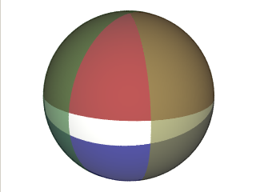

The convex polygon is made up of great circle segments of various lengths. Each great circle defines a halfspace, and they are oriented so, that they "trap" the region of interest in a fashion similar to the rectangle.
The white band is created by the intersection of four halfspaces each of which is a hemisphere. This is almost like the rectangle, but note that the horizontal extensions pinch somewhere, because the edges in this case are all great circle segments.|  |
| Figure 4. 4 halfspaces that define a polygon |
using Spherical;
/* .... */
namespace MySpace {
public class MyApp {
public void MyFunc(){
Region r = new Region();
Convex c = new Convex();
/* TBAdded */
r.Add(c);
/* ... */
}
}
}